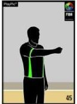
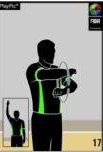

Време за решаване на теста - 10 минути. Започване?
1.Когато на отбора, който е бил във владение на топката преди това се дава право да вкара топката в игра отвън в
предното си поле и
има 13 или по-малко секунди за атака, часовникът за 24 секунди: часовникът за 24 секунди се спира и се връща на 14 секунди часовникът за 24 секунди се спира, но не се връща на 24 секунди часовникът за 24 секунди се спира и се връща на 24
секунди
2. Времеизмервачът пуска часовникът за игра, когато: при изпълнение на “спорна топка” топката е редовно отплесната от
един от скачащите състезатели след изпълнение на несполучлив последен или единствен
наказателен удар, след който топката продължава да е “жива” и докосне или е докосната от състезател на игралното
поле при вкарване на топката в игра отвън тя докосне или е докосната
от състезател в игралното поле. и трите отговора са верни
3. В протокола за дадена среща, лично нарушение на играч се отбелязва: с буквата P без индекс за поредност на нарушението с буквата D с буквата P, като се вписва малък индекс долу вдясно за
поредността на нарушението за дадения играч
4. В протокола за дадена среща, отбелязан наказателен удар се означава със запълнено кръгче с диагонална чертичка,заедно с нанесен номер на играча,
отбелязал наказателния удар, в съседното празно квадратче със запълнено кръгче,заедно с нанесен номер на играча, отбелязал
наказателния удар, в съседното празно квадратче
5. За загуба на даден отбор се дават: 0 точки 1 точка 2 точки
6. Ако отборите не са изиграли всичките си срещи и ако 2 или повече отбори имат еднакъв
резултат от победи и загуби: най-голямата голова разлика от всички играни срещи на тези
отбори до този момент решава класирането резултатът от директните двубои решава класирането се играе бараж за определяне на това кой отбор да бъде по-напред
в класирането
7. Какъв тип нарушение се отсъжда с жеста от картинката:
 стандартно лично нарушение(в защита) техническо нарушение неспортсменско нарушение нарушение в нападение
8. Коя от посочените грешки се отсъжда с жеста от картинката:
 двоен дрибъл "крачки" носена топка върната топка
9. Коя от посочените грешки се отсъжда от съдията във видеото: